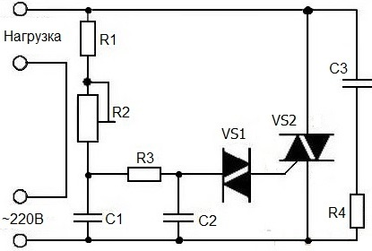
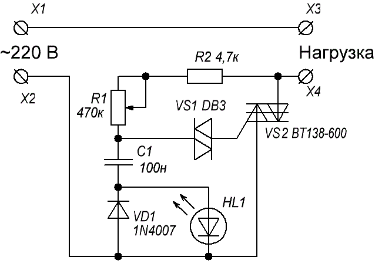
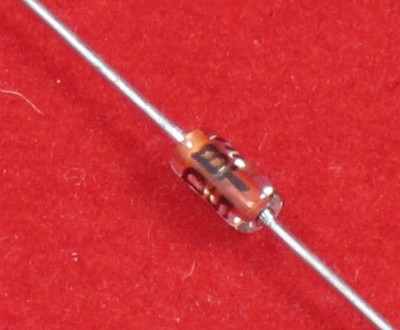

Симисторные регуляторы мощности
Вариант 1
Представленный регулятор регулирует мощность очень плавно без бросков и провалов (рис. 1).
Такой регулятор можно применить в регулировании освещения лампами накаливания, но и светодиодными тоже, если купить диммируемые. Температуру паяльника регулировать - легко. Можно бесступенчато регулировать обогрев, менять скорость вращения электродвигателей с фазным ротором и ещё много где найдётся место такой полезной вещице. Если у вас есть старая электродрель, у которой не регулируются обороты, то применив этот регулятор, вы усовершенствуете такую полезную вещь.

Рис. 1 - Схема симисторного регулятора (вариант 1)
Таблица 1
| Обозначение | Наименование | Номинал | Количество | Примечание |
|---|---|---|---|---|
| C1,C2 | Конденсатор | 0,05 мкФ/400 В | 2 | |
| C3 | Конденсатор | 0,1 мкФ/400 В | 1 | |
| R1 | Резистор постоянный | 20 кОм/0,25 Вт | 1 | МЛТ-0,25 |
| R2 | Резистор переменный | 470 кОм | 1 | от 300 кОм до 1МОм |
| R3 | Резистор постоянный | 30 кОм/0,25 Вт | 1 | МЛТ-0,25 |
| R4 | Резистор постоянный | 200 Ом/0,5 Вт | 1 | 200-300 Ом, МЛТ-0,5 |
| VS1 | Динистор | DB3 | 1 | |
| VS2 | Симистор | BT139-600 | 1 | BT138-800, КУ208 |
Все конденсаторы и динистор можно выпаять из старых энергосберегающих ламп. Симистор BT139-600, регулирует ток 18 А, BT138-800, регулирует ток 12 А. Симисторы можно взять и любые другие, в зависимости от того, какую нагрузку нужно регулировать. Радиатор охлаждения для симистора выбирается от величины планируемой мощности регулирования. Без радиатора можно регулировать мощность не более 300 Вт.
Для подключения нагрузки и сетевого провода можно использовать любые клеммные колодки.
Цепочка C3R4 служит для защиты от радиопомех.
Для проверки работоспособности устройства необходимо параллельно нагрузки (лампочки) подключить мультиметр в режиме измерения постоянного напряжения и, вращая ручку переменного резистора, измерять напряжение. Свечение лампочки должно плавно, без провалов и рывков изменяет свою интенсивность.
Будьте очень внимательны при испытании! Все детали схемы находятся под прямым напряжением
сети 220 В и прикосновение к ним, является очень опасным.
Вариант 2

Рис. 2 - Схема симисторного регулятора (вариант 2)
Таблица 2
| Обозначение | Наименование | Номинал | Количество | Примечание |
|---|---|---|---|---|
| C1 | Конденсатор | 0,1 мкФ/50 В | 1 | |
| R1 | Резистор переменный | 470 кОм | 1 | 470...500 кОм |
| R2 | Резистор постоянный | 4,7 кОм/0,25 Вт | 1 | МЛТ-0,25 |
| HL1 | Светодиод | АЛ307 | 1 | |
| VD1 | Диод | 1N4007 | 1 | Uобр макс=400...1000 В, Iпр макс>1 А. |
| VS1 | Динистор | DB3 | 1 | |
| VS2 | Симистор | BT138-800 | 1 | BT139-600, КУ208 Uобр макс>400 В, |
Переменный резистор подойдет сопротивлением 470...500 кОм, с линейной зависимостью. Для отечественных резисторов, должна быть в маркировке буква "А", для импортных - английская буква "В".

Рис. 4 - Динистор DB3
Для проверки регулятора, подать на его вход 220 В. К выходу регулятора подключить лампу 200 Вт. Регулировка должна былть плавной.